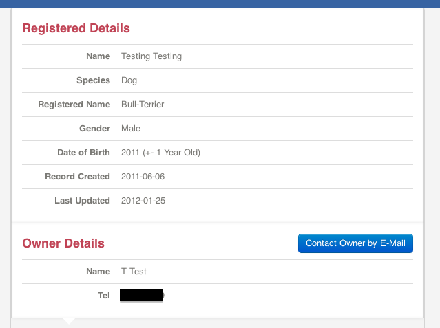
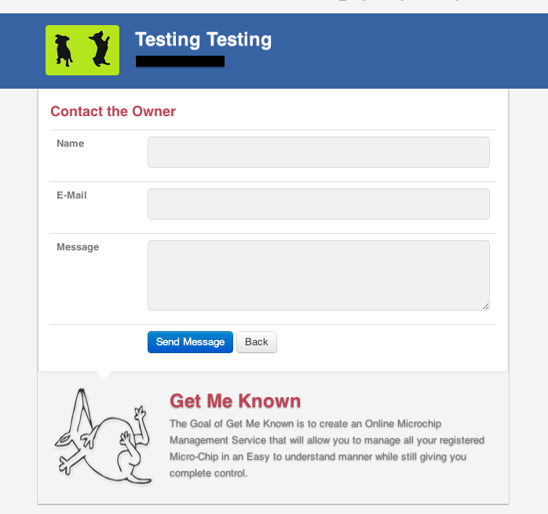
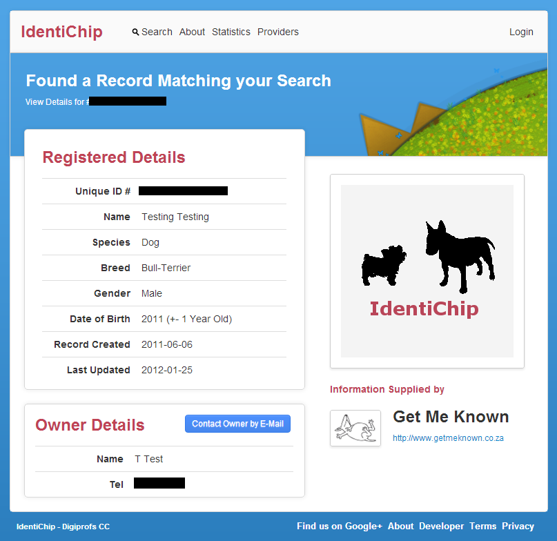
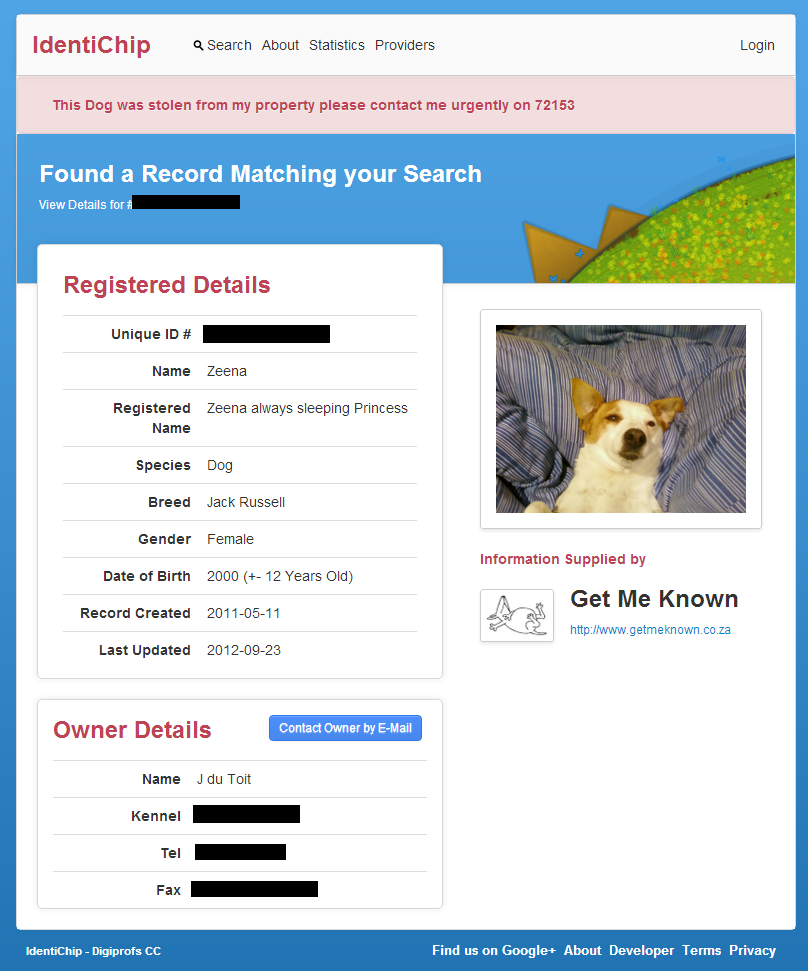

IdentiChip
Search All Registered Microchip / Tag Providers
Visit the site @ www.identichip.org

Search All Registered Microchip / Tag Providers
Visit the site @ www.identichip.org

As the developer and administrator of www.getmeknown.co.za and www.getmehome.co.za it's become abundantly clear that the Microchip / Tag / Animal Identification world is in dire need of a easy to use single point of search.
And that's what IdentiChip tries to solve. By allowing providers to register and open their data through a custom endpoint and have their results included in the search.
So that's why I built IdentiChip
A Provider represents a single service supplying and handling data for a database of animals, of any species.
To be listed on the site a provider must be approved and tested.
| Approval | Providers are approved by our administrators that do basic checks to see if the supplied information is valid and the registering provider is actually a provider. |
| Tested | Providers are marked as tested when they have passed one validation test from our site. Which will also configure their API url. |
On 14 Auth I created the IdentiChip public repo and started making the system.
Took about 2 weeks and I had my first prototype on App Engine in Python. Was more focuessed on Functionality and trying to get a basic version up.


On the submission deadline for the first round I had:
The Basics really and that what I aimed for.
Now that the App made it through to the finals I had some goals:
And some more I can't think of now
Redid the entire site and aimed for simple but usable.
Much better right ? Along with the redesign came the new brand, which is visible accross all products.


The most important part of IdentiChip, apart from single location for search.
The API allows third-party applications to:
Here's a quick walk through
Each provider has to build a endpoint if they wish to be included in the search.
Our service authenticates with a hash generated from a secret key given to your provider.
A search is done by asynchronously calling all the endpoints of our providers with a 4 seconds timeout.
{
"uid":"xxxxxxxxx",
"name":"Bruno",
"gender":"male",
"distinctive_features":"Some Descriptive Features of Pet",
"dob":"2012",
"species":"Dog",
"breed":"Cross - Labrador & Border Collie",
"created":"2012-08-04",
"lastupdated":"2012-08-04",
"owner_name":"Mr. Do it",
"contact_url":"http://www.identichip.org/apis/v1/contact?token={token}&key={key}&provider={provider},
"provider": {
"name": "Name of Provider",
"logo": "Logo of Provider",
"website": "Website of Provider",
"id": "ID of provider"
}
}
{
"search_result":"false",
"message":"Could not find that Tag"
}
{
status: "failure",
message: "No Access Key Provided"
}
My vision is to have 3 sites.
Just Imagine having a Service orientated service framework for animals
That's it. Thanks for listening.
Any feedback is welcome and anyone interested in building out more of these services , I would really appreciate the help !
The source code is up on https://github.com/Johanndutoit/IdentiChip. Which will soon be moving to it's own organization to handle all the others services that are going to be created.